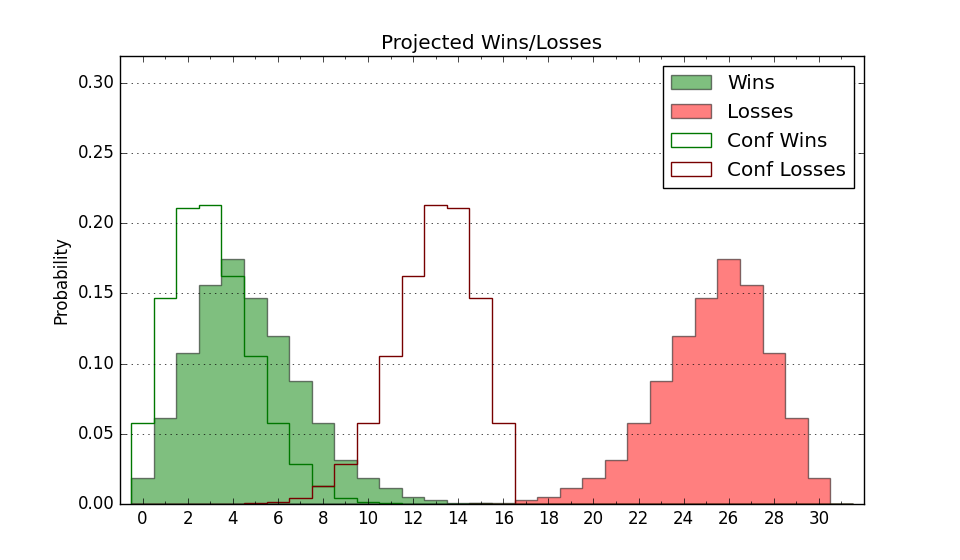

| Home | Game Probabilities | Conferences | Preseason Predictions | Odds Charts | NCAA Tournament |
| City: | Newark, New Jersey | |
| Conference: | America East (1st)
| |
| Record: | 0-0 (Conf) 0-5 (Overall) | |
| Ratings: | Comp.: -24.8 (359th) Net: -37.7 (361st) Off: 79.6 (354th) Def: 117.2 (328th) SoR: 0.0 (270th) |
| Remaining | ||||||
|---|---|---|---|---|---|---|
| Date | Opponent | Win Prob | Pred. | |||
| 11/21 | @ Bucknell (184) | 6.0% | L 58-77 | |||
| 11/26 | @ Cleveland St. (312) | 14.6% | L 62-74 | |||
| 11/27 | (N) Morehead St. (286) | 20.7% | L 62-70 | |||
| 12/1 | @ Massachusetts (108) | 2.8% | L 57-82 | |||
| 12/4 | @ Seton Hall (93) | 2.2% | L 50-74 | |||
| 12/7 | Navy (308) | 36.5% | L 67-70 | |||
| 12/11 | @ Delaware St. (338) | 19.5% | L 60-69 | |||
| 12/14 | Wagner (332) | 42.8% | L 58-59 | |||
| 12/29 | @ Washington (67) | 1.3% | L 55-84 | |||
| 1/9 | UMBC (274) | 29.9% | L 69-75 | |||
| 1/11 | @ UMass Lowell (128) | 3.6% | L 58-81 | |||
| 1/16 | Maine (208) | 21.1% | L 59-67 | |||
| 1/18 | New Hampshire (350) | 49.4% | L 67-68 | |||
| 1/23 | @ Vermont (118) | 3.3% | L 51-72 | |||
| 1/25 | @ Albany (276) | 11.3% | L 64-78 | |||
| 1/30 | UMass Lowell (128) | 11.2% | L 63-77 | |||
| 2/1 | Bryant (149) | 13.8% | L 63-76 | |||
| 2/6 | @ Maine (208) | 7.3% | L 55-71 | |||
| 2/8 | @ New Hampshire (350) | 22.3% | L 63-72 | |||
| 2/13 | @ Bryant (149) | 4.5% | L 59-80 | |||
| 2/15 | Binghamton (304) | 36.1% | L 65-69 | |||
| 2/22 | @ UMBC (274) | 11.2% | L 65-79 | |||
| 2/27 | Vermont (118) | 10.5% | L 55-68 | |||
| 3/1 | Albany (276) | 30.2% | L 69-74 | |||
| 3/4 | @ Binghamton (304) | 14.2% | L 61-73 | |||
| Previous | Game Score | |||||
| Date | Opponent | Win Prob | Result | Off | Def | Net |
| 11/4 | Penn (273) | 29.9% | L 57-58 | -14.3 | 26.3 | 12.0 |
| 11/8 | @Villanova (104) | 2.6% | L 54-91 | 2.2 | -25.8 | -23.6 |
| 11/12 | Loyola MD (341) | 46.4% | L 50-68 | -25.0 | -1.8 | -26.8 |
| 11/16 | @Morgan St. (349) | 22.2% | L 69-81 | 1.9 | -3.3 | -1.3 |
| 11/18 | @George Washington (139) | 3.9% | L 64-84 | 10.7 | -4.5 | 6.2 |
| Stats & Trends | |||||
|---|---|---|---|---|---|
| Current | Day | Week | Month | Season | |
| Composite | -24.8 | -1.1 | -6.3 | -8.8 | -8.8 |
| Comp Rank | 359 | -- | -7 | -28 | -28 |
| Net Efficiency | -37.7 | +3.8 | +3.9 | -- | -- |
| Net Rank | 361 | +1 | -4 | -- | -- |
| Off Efficiency | 79.6 | +5.2 | +3.7 | -- | -- |
| Off Rank | 354 | +7 | -- | -- | -- |
| Def Efficiency | 117.2 | -1.4 | +0.2 | -- | -- |
| Def Rank | 328 | -10 | -26 | -- | -- |
| SoS Rank | 247 | +55 | -102 | -- | -- |
| Exp. Wins | 4.7 | -0.4 | -2.6 | -3.9 | -3.9 |
| Exp. Conf Wins | 3.1 | -0.2 | -1.1 | -1.6 | -1.6 |
| Conf Champ Prob | 0.0 | -0.0 | -0.2 | -0.3 | -0.3 |

| Advanced Stats | ||
|---|---|---|
| Stat | Value | Rank |
| Off Eff FG % | 0.425 | 322 |
| Off Ast Ratio | 0.125 | 255 |
| Off ORB% | 0.178 | 346 |
| Off TO Rate | 0.177 | 285 |
| Off FT Ratio | 0.194 | 350 |
| Def Eff FG % | 0.539 | 265 |
| Def Ast Ratio | 0.159 | 269 |
| Def ORB% | 0.281 | 166 |
| Def TO Rate | 0.109 | 335 |
| Def FT Ratio | 0.413 | 260 |